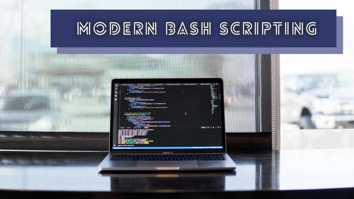
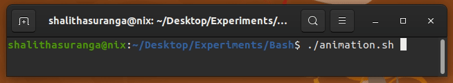
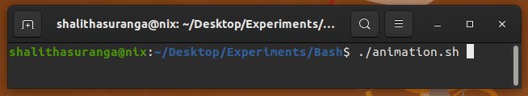
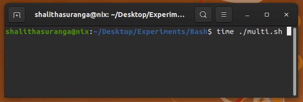
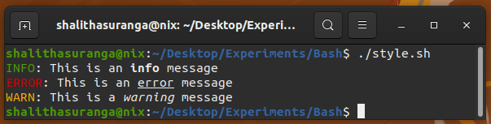

使用这些技巧使您的 Bash 脚本更具交互性和未来感。

程序员经常使用 Bash 命令语言创建 shell 脚本来自动化执行任务。例如，他们为各种配置、文件操作、生成构建工件以及各种 DevOps 相关活动创建 Bash 脚本。几乎所有类 Unix 或基于 Unix 的操作系统都为用户提供了预装的 Bash 解释器——因此我们可以使用 Bash 编写更多可移植的自动化脚本。
我们已经知道，Bash 脚本是指使用 Bash 命令语言的语法、内置 Bash 命令和核心操作系统 CLI 程序（如 GNU 核心实用程序）编写一系列命令。标准的 Bash 脚本通常会执行一些命令并在终端上显示纯文本输出。
但是，我们可以通过几个独特的概念使我们的 Bash 脚本更具未来感和用户友好性。以下概念使用一些鲜为人知的现代 Bash 脚本技术使您的自动化脚本现代化。
在某些情况下，我们必须从 Bash 脚本执行长时间运行的命令。有几种方法可以指示长时间运行的任务。最简单易行的方法是使用 echo 命令显示带有三个尾随点（也称为省略号）的消息。但是，这种方法会产生一条静态消息，对用户和开发人员来说交互性和友好性都不是很好。
我们可以使用核心 Unix 操作系统命令和 Bash 内置命令轻松显示 ASCII 动画。看看下面只有两个动画帧的简单动画：
#!/bin/bash
while true;
do
# Frame #1
printf "\r< Loading..."
sleep 0.5
# Frame #2
printf "\r> Loading..."
sleep 0.5
done上面的 Bash 脚本在终端上显示了一个无休止的两帧动画。 printf 语句使用 \r 转义字符来重置当前行的终端光标。上面的脚本呈现以下基于文本的动画：

我们可以向动画添加更多帧并显示它，直到使用以下 Bash 脚本完成特定的耗时任务。
#!/bin/bash
sleep 5 &
pid=$!
frames="/ | \\ -"
while kill -0 $pid 2&>1 > /dev/null;
do
for frame in $frames;
do
printf "\r$frame Loading..."
sleep 0.5
done
done
printf "\n"上面的脚本显示基于文本的旋转动画，直到 sleep 5 命令完成执行。同样，我们可以为任何长时间运行的任务显示旋转动画，而不是显示带有回显的静态消息。看看下面的预览。

这些基于文本的动画使 CLI 程序更加用户友好和交互，因此大多数现代 CLI 程序都显示这些 ASCII 动画。现在，您知道了如何使用动画使 Bash 脚本现代化——尝试通过更改帧字符列表来创建不同的动画。
Bash 脚本和 CLI 程序通常为经常使用终端界面的开发人员提供工具。例如，Flutter框架为开发者提供了flutter命令行程序，用于管理Flutter应用和配置Flutter应用开发环境。假设您正在使用 Bash 脚本开发一个长时间运行的命令。如何在用户不看终端输出时显示重要消息？
所有类 Unix 和基于 Unix 的操作系统都有特殊的命令来显示 GUI 通知。我们可以从 Bash 脚本中调用这些命令来显示本机通知。例如，您可以在基于 GNU/Linux 的操作系统上使用 notify-send 命令，如下所示。
#!/bin/bash
sleep 10
notify-send "notify.sh" "Task #1 was completed successfully"一些 GNU/Linux 发行版通常提供notify-send(通知发送工具)的预安装版本。上面的 Bash 脚本会在十秒后显示本机通知。看下面的预览：
macOS 用户可以从 Bash 执行 AppleScript 解释器来显示本机通知，如下所示：
#!/bin/bash
sleep 10
osascript -e "display notification \"Task #1 was completed successfully\" with title \"notify.sh\""GUI 通知对于通过长时间运行的脚本或永远运行的后台脚本向用户通知重要事件非常有帮助。
程序员通常使用他们的 Bash 脚本按顺序运行命令。因此，Bash 解释器一条一条地执行每个语句，直到它到达源文件的末尾或退出语句。我们确实可以将这种顺序执行方式改为并行执行，加速自动化脚本。
首先，我们可以将整个 Bash 脚本分解为几个可以异步运行的独立函数。接下来，我们可以将所有 Bash 函数作为后台任务运行。最后，我们可以使用内置的wait命令，让脚本执行过程保持活跃，直到所有异步进程结束执行。
看下面的示例代码：
#!/bin/bash
function task1() {
echo "Running task1..."
sleep 5
}
function task2() {
echo "Running task2..."
sleep 5
}
task1 &
task2 &
wait
echo "All done!"这里我们运行两个并行函数作为后台作业：task1 和 task2。此外，我们使用 wait 内置函数使脚本实例保持活动状态，直到后台作业完成执行。如果您检查脚本的执行时间，您会发现这两个函数都在大约五秒内结束——而不是十秒。

早些时候，我们讨论了如何通过长时间运行的 Bash 脚本显示 GUI 通知。同样，我们可以显示其他 GUI 组件，如消息框、输入框和文件选择对话框。有时我们必须为非技术的计算机用户构建基于 GUI 的程序。如果您已经了解 Bash 脚本，则无需使用其他 GUI 开发工具来创建简单的 GUI 应用程序——因为我们可以使用 Bash 显示 GUI 元素。
zenity 程序提供了几个命令来显示来自 GNU/Linux 命令行环境的各种 GUI 元素。例如，我们可以使用以下命令打开一个文件选择对话框。
zenity --file-selection大多数基于 GNOME 的 GNU/Linux 操作系统发行版都预装了 Zenity 版本。此外，您也可以在基于 KDE 的 GNU/Linux 发行版上使用 kdialog 命令。
macOS 用户可以照常调用 AppleScript 解释器。例如，他们可以使用以下命令通过 Bash 脚本显示文件选择对话框。
osascript -e "POSIX path of (choose file)"您还可以构建自己的二进制文件（如 Zenity）并显示来自 Bash 脚本的任何 GUI 组件。此外，可以使用 Neutralinojs 通过 Bash 脚本在本机窗口中显示交互式本地/远程 HTML 界面。
我们经常使用 echo 命令从脚本中输出消息。默认情况下，echo 命令根据默认的终端文本样式打印给定的文本。但是，在某些场景下，我们可以使用基本的用户体验原则，根据当前上下文改进文本样式。例如，我们可以用红色显示一条错误消息。此外，您还可以使用粗体强调段落中的一些关键细节。
tput Unix 程序提供了控制当前终端屏幕的命令。它提供了更改终端光标位置、检索终端信息和更改文本样式的命令。我们可以调用带有 echo 命令的 tput 命令来在所有类 Unix 和基于 Unix 的操作系统上打印各种文本样式。
查看以下打印不同文本样式的示例：
#!/bin/bash
bold=$(tput bold)
underline=$(tput smul)
italic=$(tput sitm)
info=$(tput setaf 2)
error=$(tput setaf 160)
warn=$(tput setaf 214)
reset=$(tput sgr0)
echo "${info}INFO${reset}: This is an ${bold}info${reset} message"
echo "${error}ERROR${reset}: This is an ${underline}error${reset} message"
echo "${warn}WARN${reset}: This is a ${italic}warning${reset} message"在这里，我们使用 tput 命令为每种文本样式定义了一些变量。最后我们用echo命令执行临时保存的命令，显示不同的文字样式，如下图。

您可以使用上述方法为您的 Bash 脚本构建您自己的个性化配色方案。
[1] AppleScript: https://en.wikipedia.org/wiki/AppleScript[2] Neutralinojs: https://github.com/neutralinojs/neutralinojs